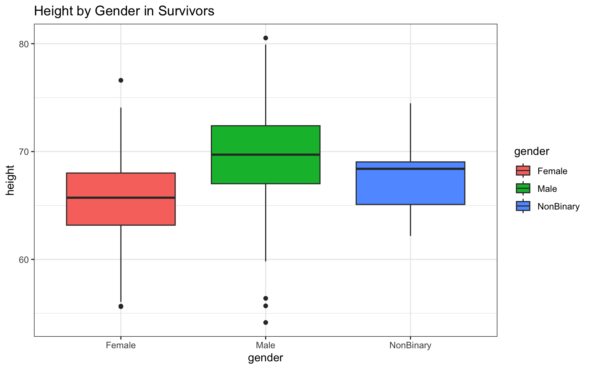

AN/BI 588: Homework 02 Solution
September 27, 2021
Homework Solutions!
Every Saturday morning, at the same time, a primatologist goes and sits in the forest to listen for titi monkey calls, counting the number of calls they hear in a 2 hour window from 5am to 7am. Based on previous knowledge, she believes that the mean number of calls she will hear in that time is exactly 15. Let X represent the appropriate Poisson random variable of the number of calls heard in each monitoring session.
- What is the probability that she will hear more than 8 calls during any given session?
- What is the probability that she will hear no calls in a session?
- What is the probability that she will hear exactly 3 calls in a session?
- Plot the relevant Poisson mass function over the values in range 0 ≤ x ≤ 30.
- Simulate 104 results from this distribution (i.e., 2 years of Saturday monitoring sessions).
- Plot the simulated results using hist() and use xlim() to set the horizontal limits to be from 0 to 30. How does your histogram compare to the shape of the probability mass function you plotted above?
The first thing we should do is find areas of the previous modules that might help with this data analysis. There are a few hints in the questions… First off, we need to know about the Poisson distribution, which is in Module 08. Next, we need to know how to run a simulation, which we did in Module 07 when discussing how to bootstrap data.
With this info, we should be able to come up with proper code to answer these questions!
According to the setup, this is a Poisson distributed dataset, which makes sense: Poisson is often used to model open ended counts of independently occurring events (which means we’re assuming each titi call is independent of each other). It’s defined by a single parameter, λ, which is the mean number of occurrences of the event in a given interval. In this case, λ = 15, our session is a two-hour window from 5 to 7 am, and X is our presumed number of calls…
Now, we know the probability mass function for Poisson from Module 08, and that for a given number or range of x that:
> poisPMF<-function(x,l) {((l^x)*exp(-l))/(x!)}where l is standing in for λ.
We could use this to solve our problem set, but it would be much easier to use the built-in Poisson functions. We can access these by searching for help around one of these functions we learned about in Module 08, dpois:
> `?`(dpois)Note that for any distribution function (e.g., Poisson, Binomial, Beta, etc), there are four functions available. We’ll use Poisson here as an example:
dpois: the probability density function, this will give you a point estimate of the probability for a given valuexfor the entered parameters (in this case, λ)ppois: the probability distribution function, this will give you the cumulative probability for a given valuexfor the entered parameters.qpois: the quantile function, this will give the value ofxfor which a particular cumulative probability is associated.rpois: drawsnrandom observations from a specified Poisson distribution.What is the probability that she will hear more than 8 calls during any given session?
In this case, counting from 9 through infinity might be daunting, but remember that probabilities are bounded from 0 to 1, which means that the cumulative probability of 0 to 8 calls will be the complement of our desired solution. Let’s start by finding the probability of hearing 0 to 8 calls (or, x=8 for cumulative probability) using the ppois function, which will calculate the cumulative probability:
> x <- 8
> l <- 15
> 1 - ppois(q = x, lambda = l) #subtracting from 1 to get the complement## [1] 0.9625535In a previous class, student Lara Hakam did it this way, which is a little more efficient:
> ppois(8, 15, lower.tail = F)## [1] 0.9625535- What is the probability that she will hear no calls in a session?
In this case, we’ll use dpois to get the probability of a single outcome (0, because she heard no calls) for λ = 15, rather than the cumulative probability.
> dpois(0, 15)## [1] 3.059023e-07- What is the probability that she will hear exactly 3 calls in a session?
We’ll use the same method here, but instead of 0, we’ll enter 3:
> dpois(3, 15)## [1] 0.0001720701- Plot the relevant Poisson mass function over the values in range 0 ≤ x ≤ 30.
Ok, so in this case, we’ll need to plot a range (0 through 30) over the Poisson mass function where λ is 15 (so we’ll use dpois, rather than ppois ):
> x <- 0:30
> l = 15
> barplot(dpois(x, l))
- Simulate 104 results from this distribution (i.e., 2 years of Saturday monitoring sessions).
As Lara also suggested in a previous class, we’ll use rpois for this:
> rpois(104, 15)## [1] 11 10 12 12 20 18 17 18 15 8 12 14 15 21 16 11 13 14 13 19 12 12 14 11 9
## [26] 17 17 18 20 25 18 8 9 13 12 18 7 23 17 13 12 12 19 18 19 15 19 10 13 19
## [51] 17 18 15 18 19 22 12 7 16 20 17 14 10 11 13 17 17 21 17 14 14 11 7 13 12
## [76] 19 16 12 15 14 9 17 13 15 13 16 17 20 12 13 17 22 20 11 20 16 16 24 21 14
## [101] 18 13 11 12- Plot the simulated results using hist() and use xlim() to set the horizontal limits to be from 0 to 30. How does your histogram compare to the shape of the probability mass function you plotted above?
We’ll nest our rpois results in a histogram using the base R graphics, as suggested in a previous class by Christian Gagnon (which I’ll make pretty using the col command):
> y <- rpois(104, 15)
> hist(y, xlim = c(0, 30), xlab = "Number of Calls", main = "Call Monitoring Histogram",
+ breaks = 30, col = "forestgreen")
As you can see, our histogram is roughly the same shape as the PMF, but not quite. Our random sampling doesn’t perfectly fit the ideal (or population) distribution, but with a large enough sample (maybe 10 years of Saturdays?), it would!

This homework was lovingly inspired by the wonderful, brilliant (and dearly departed) Brazilian primatologist Anand Dacier, based on work she published in the journal Biotropica (2011).